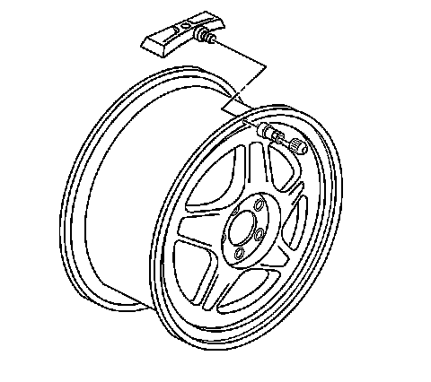
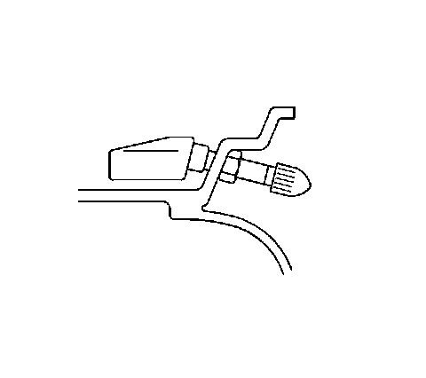

Tire Pressure Sensor Grommet Replacement
Tire Pressure Sensor Grommet Replacement
Removal Procedure
1. Raise the vehicle on a suitable support. Refer to Lifting and Jacking the Vehicle (Service and Repair) .
2. Remove the tire/wheel assembly from the vehicle. Refer to Tire and Wheel Removal and Installation (Service and Repair) .
Important: Before the tire is removed from the wheel, note the following items to avoid tire pressure sensor damage upon tire dismounting:
* Place the sensors cap and valve on a dry clean surface after removal. The cap is aluminum and the valve is nickel plated to prevent corrosion and are not to be substituted with a cap or valve made of any other material.
* Position the bead breaking fixture 90 degrees from the valve stem when separating the tire bead from the wheel.
* Position the mounting/dismounting head so the tire iron, or pry bar can be inserted slightly clockwise of the sensor body when prying the tire bead up and over the mounting/dismounting head.
* Using the tire machine, rotate the tire/wheel assembly clockwise when transferring the tire bead to the outside of the wheel rim.
* Repeat items for inner bead.
3. Remove the tire from the wheel. Refer to Tire Mounting and Dismounting (Removal and Replacement) .

Important: If any tire sealant is noted upon tire dismounting, replace the sensor. Refer to Tire Pressure Indicator Sensor Replacement (Snap In Style) (Tire Pressure Indicator Sensor Replacement (Snap In Style)) . Also remove all residual liquid sealant from the inside of the tire and wheel surfaces.
4. Remove the tire pressure sensor nut.
5. Remove the sensor from the wheel hole.
6. Remove the sensor grommet from the valve stem.
Installation Procedure
1. Clean any dirt or debris from the grommet sealing areas.
2. Install the grommet on the sensor valve stem.

3. Insert the sensor in the wheel hole with the air passage facing away from the wheel.
Notice: Refer to Fastener Notice (Fastener Notice) .
4. Install the sensor nut and position the sensor body parallel to the inside wheel surface while torquing.
Tighten the sensor nut to 7 N.m (62 lb in).
Important: Before installing the tire on the wheel, note the following items to avoid tire pressure sensor damage upon tire mounting:
* Position the mounting/dismounting head 180 degrees from the valve stem.
* Position the bead transition area 45 degrees counterclockwise of the valve stem.
* Using the tire machine, rotate the tire/wheel assembly clockwise when transferring the tire bead to the inside of the wheel rim.
* Repeat items for outer bead.
5. Install the tire on the wheel. Refer to Tire Mounting and Dismounting (Removal and Replacement) .
6. Install the tire/wheel assembly on the vehicle. Refer to Tire and Wheel Removal and Installation (Service and Repair) .
7. Lower the vehicle.